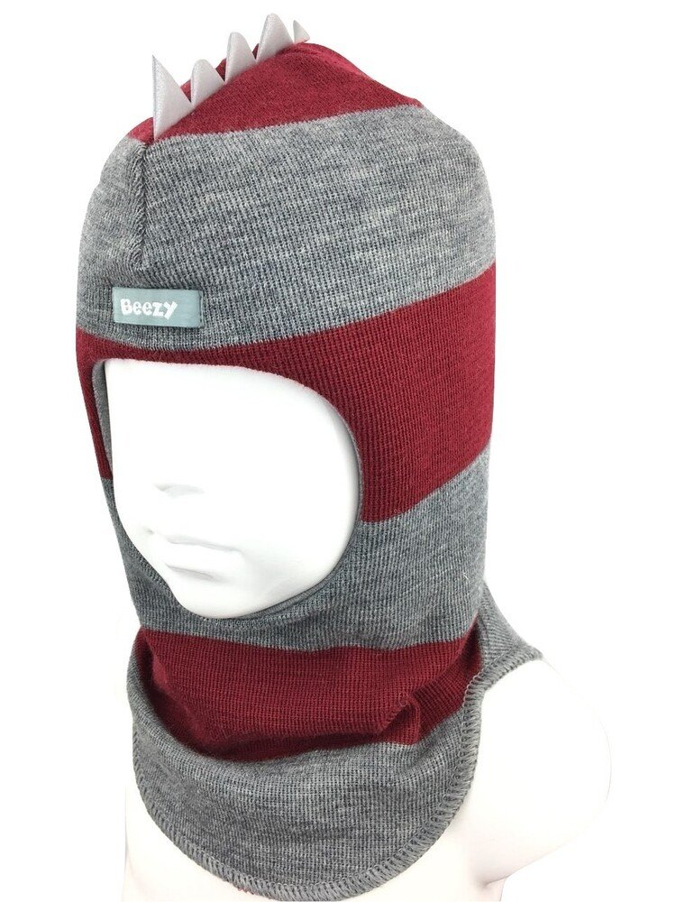

kepurė-šalmas - Musumažyliai
2020.10.27 11:05

Registruotis | Prisijungti Parduok dabar Parduok dabar Registruotis | Prisijungti Tavo „Mūsų mažylių“ gidas Kategorijos Apranga mergaitėms Apranga berniukams Žaislai, žaidimai Kūdikių ir vaikų priežiūra Vežimukai Judėjimo priemonės Kėdutės Baldai vaikams Knygos, mokyklos reikmenys Apranga nėštukėms Visa kita Sužinok daugiau Kaip tai veikia? Programėlė Pagalba Aktualu Apie įmonę Apie mus Reklama Nuostatai Saugumo politika Privatumo politika Taisyklės Slapukų politika Privatumas Slapukų nustatymai Bendruomenė Forumas Vaikiški Peržiūrėti visus Apranga mergaitėms Apranga berniukams Žaislai, žaidimai Kūdikių ir vaikų priežiūra Vežimukai Judėjimo priemonės Kėdutės Baldai vaikams Knygos, mokyklos reikmenys Apranga nėštukėms Visa kita Daugiau kategorijų Vinted Peržiūrėti visus Apranga mergaitėms Apranga berniukams Žaislai, žaidimai Kūdikių ir vaikų priežiūra Vežimukai Judėjimo priemonės Kėdutės Baldai vaikams Knygos, mokyklos reikmenys Apranga nėštukėms Visa kita Peržiūrėti visus Kūdikėliams Avalynė Lauko drabužiai Megztiniai, džemperiai Marškiniai, palaidinės Suknelės Sijonukai Kelnės ir šortai Rankinės, kuprinytės Aksesuarai Maudymosi apranga Apatiniai drabužiai Miego apranga Sportinė apranga Urmu Dvynukams, trynukams Karnavaliniai kostiumai Proginė apranga Kiti drabužiai Peržiūrėti visus Kūdikėliams Avalynė Lauko drabužiai Megztiniai, džemperiai Marškiniai, marškinėliai Kelnės ir šortai Kuprinytės, krepšeliai Aksesuarai Maudymosi apranga Apatiniai drabužiai Miego apranga Sportinė apranga Urmu Dvynukams, trynukams Karnavaliniai kostiumai Proginė apranga Kiti drabužiai Peržiūrėti visus Žaidimai Dėlionės Žaislai Žaidimų konsolės ir videožaidimai Peržiūrėti visus Priemonės miegui, tekstilė Priemonės maitinimui Kūdikių nešynės, vaikjuostės Priemonės maudynėms ir po jų Mažylio pervystymui, odelės priežiūrai Vaikų priežiūros technika Gultukai ir supynės Seilinukai Naktipuodžiai Apsaugos vaikams/ nuo vaikų Peržiūrėti visus Skėtuko formos Sportiniai Universalūs Dvynukams ir daugiau Vežimėlių, autokėdučių priedai Peržiūrėti visus Vaikštynės Stumdukai Paspirtukai Dviračio kėdutės, priekabos Triratukai, triračiai Dviratukai, balansiniai dviratukai, dviračiai Judėjimo priemonės laukui Rogės, snieglentės, slidės Žiemos pramogoms Riedučiai, pačiūžos Peržiūrėti visus Automobilio kėdutės Maitinimo kėdutės Peržiūrėti visus Lopšeliai Lovytės Lovos paaugusiems Čiužiniai Lavinamieji kilimėliai Maniežai Vystymo paviršiai Vaikų kambario baldai Peržiūrėti visus Vaikiškos knygutės Knygos tėvams Vadovėliai, pratybos Kuprinės Raštinės reikmenys Peržiūrėti visus Palaidinės, tunikos Suknelės, sarafanai Sijonai Kelnės Šortai, kapriai Kombinezonai Megztiniai Paltai, lietpalčiai, striukės Maudymosi kostiumėliai Apatinis trikotažas Sportinė apranga Peržiūrėti visus Apie mus Sužinok daugiau Kaip tai veikia? Programėlė Pagalba Aktualu Apie įmonę Apie mus Reklama Nuostatai Saugumo politika Privatumo politika Taisyklės Slapukų politika Privatumas Slapukų nustatymai Bendruomenė Forumas
Norėdamas toliau pirkti ir parduoti prekes vaikams, pereik į Vinted. „Mūsų Mažyliuose“ jau nebegalėsi pirkti kitų prekių.
Pagrindinis Vaikiški Apranga mergaitėms Aksesuarai Kepurės, skrybėlės 10,50 € Dydis 8-12 metų, 56 cm Būklė Nauja be etikečių Spalva marga Vieta Pakruojis, Lietuva Peržiūrėta 168 Įkeltakepurė-šalmas
nauja be etiketės, šilta, akrilo siūlai, puošta dideliu bumbulu, dydis 54/56, + p. iš.
Nario skelbimai (525) Yigga be defektų, dydis 122/128, šiltos, + p. iš. 4,00 € 8 metai / 122-128 cm naujos, medvilninės, dydis 146/152 cm, + p. iš. 6,00 € 12 metų / 146-152 cm 2 vnt. komplektas, segtukas 4,5 cm., komplekto kaina 2,20 eur, + p. iš. 2,20 € naujas be etiketės, vnt kaina 2,50 eur, + p. iš. 2,50 € be defektų, dydis 35, + p. iš. 5,00 € 35 naujos be etiketės, dydis 134/140 cm, minkštos medvilnės, kaina 12,50 eur, + p. iš. 12,50 € 10 metų / 134-140 cm naujos, minkštos, lengvos, turi tamprumo, spalva: marga, Medžiaga: Mišrus audinys, poliesteris, spandex, Storis: Standartinis, Liemens ... 6,00 € 12 metų / 146-152 cm be defektų, tvarkingas, šiltas (su pūkeliu viduje), su gobtuvu, su kišenėmis, dydis 128/134 , 80 proc medvinės, 20 proc poliesterio, ben... 7,00 € 9 metai / 128-134 cm naujos be etiketės, elastingos, puoštos bantais, laisvas dydis 30/37 cm, poros kaina 2,60 eur, + p. iš. 2,60 € 11 metų / 140-146 cm naujos be etiketės, dydis 33/37, + p. iš. 6,50 € 12 metų / 146-152 cm Fashion be defektų, dėvėti vienos mergaitės, nenudaužyti, nenubraižyti, dėmių neturi, padas minkštas, lankstus, lipukai neapsivėlę, laiko stipr... 6,50 € 33 naujos, raudonos, bordo sp., minkštos, lengvos, tamprios, dydis 140/146, bendras ilgis apie 90 cm, vnt. kaina 5,00, + p. iš. 5,00 € 11 metų / 140-146 cm be didesnių defektų, yra neryškių pabraižymų, dėvėti nedaug, lengvi, minkšto, lankstaus pado, užsisega tvirtais lipukais, juodos spalvo... 5,00 € 32 naujos, dydis 135/140 cm, medvilnės 95 proc, 5 proc lykros, elastingos, minkštos, + p. iš. 8,50 € 10 metų / 134-140 cm naujos, medvilninės, dydis 134/140 cm, komplekto kaina 5,50 eur, + p. iš. 5,50 € 10 metų / 134-140 cm bendrieji matmenys 34 cm x 27 cm, paprastas, įdomus, madingas ir praktiškas dizainas, galima laikyti mažus daiktus, kaip žaislai, knygo... 2,00 € naujas, lankelis puoštas gėlėmis, dydis 12,5 cm, vnt kaina 1,60 eur, + p. iš. 1,60 € naujos be etiketės, puoštos bantais, tinka maždaug 3/4 metų mergaitei, poros kaina 2,30 eur, + p. iš. 2,30 € 24-36 mėnesiai / 92-98 cm naujos be etiketės, sudėtis: 95% cotton 5% spandex, dydis 146/152 cm, + p. iš. 7,00 € 12 metų / 146-152 cm naujos be etiketės, sudėtis: 95% Cotton + 5% Spandex, 2 vnt. tinka 146 cm, vienos didesnės 152 cm, + p. iš. 5,60 € 12 metų / 146-152 cm naujos be etiketės, elastingos, poliesteris, dydis 134/140 cm, vnt kaina 2,00 eur, + p. iš. 2,00 € 10 metų / 134-140 cm naujos su etikete, šiltos, tinka 6-9 metų vaikui, poros kaina 3,00 eur, + p. iš. 3,00 € 9 metai / 128-134 cm nauja su etikete, šilta, rašo, kad 90% pūko, neperšlampama, neperpučiama, gobtuvas gerai apsigaubia, su kišenėmis, dydis 140 cm, (išm... 30,00 € 10 metų / 134-140 cm Tom Tailor turi defektą, su gobtuvu, su kišenėmis, užslėpti rankogaliai, dydis 134/140 cm, bendras ilgis apie 52 cm, ilgis nuo pažasties iki apa... 3,00 € 10 metų / 134-140 cm Peržiūrėti visus nario skelbimus (525) Panašūs skelbimai Nauja. Plotis 22.5 cm Aukštis 25.5 cm Kepurė dviejų sluoksnių trikotažo. 8,00 € 8-12 metų, 56 cm Nauja, su bumbulu, šilta. 9,00 € 8-12 metų, 56 cm Nauja stilinga kepurė, su bumbulu. 14,00 € 8-12 metų, 56 cm Balta, ruda, su bumbulu, nauja. 13,00 € 8-12 metų, 56 cm Su šalyku, katineliu ir bumbulais. Šilta. 21,00 € 8-12 metų, 56 cm Blizganti ausku, su bumbulu. 13,00 € 8-12 metų, 56 cm Su kačiuku ir bumbulais. Nauja. 21,00 € 8-12 metų, 56 cm Nauja stilinga kepurė su šalyku. Perfect. Su bumbulu. 21,00 € 8-12 metų, 56 cm Labai smagi ir daili 3,00 € 8-12 metų, 56 cm IŠPARDUODU! Rankų darbo aukštos kokybės merino vilnos komplektukas, tiks nuo 7 metukų iki paauglės, nedėvėtas, labai minkštas ir švelnus,... 12,00 € 8-12 metų, 56 cm Šilta kepurė mergaitėms 4-16 metų. 5,00 € 8-12 metų, 56 cm Be defektų. Nesikandžioja. 4,50 € 8-12 metų, 56 cm Nauja, graži kepurė, pilka, juoda su bumbulu. 9,00 € 8-12 metų, 56 cm Nuostabi ruda kepurytė su naturaliu bumbulu! Labai daili ir minkšta. Su blizgučiais. 4,50 € 8-12 metų, 56 cm Nauja. Plotis 22.5 cm Aukštis 25.5 cm 8,00 € 8-12 metų, 56 cm Be defektu 4,00 € 8-12 metų, 56 cm Deveta 5,00 € 8-12 metų, 56 cm Labai geros būklės ryškiaspalvė rožinė žieminė kepurė su dirbtiniu kailiuku, vad. „tankisto“ kepurytė, išorė sodrios rožinės spalvos megz... 5,00 € 8-12 metų, 56 cm Be defektų 3,00 € 8-12 metų, 56 cm Vienos kepurės kaina 7€ ☺️ 7,00 € 8-12 metų, 56 cm Dėvėta kartą. Būklė puiki. Tinka ir suaugusiojo galvai. Siuntimas neįskaičiuotas. 4,00 € 8-12 metų, 56 cm Dėvėti. Būklė gera. Tinka ir suaugusiojo galvai. Siu timas neįskaičiuotas. 5,00 € 8-12 metų, 56 cm Dėvėti. Būklė tikrai gera. Tinka ir suaugusiojo galvai. Siuntimas neįskaičiuotas. 5,00 € 8-12 metų, 56 cm 25*29 aukštis. Kepurė dviguba, mova apsisuka du kartus. Naujas. 12,00 € 8-12 metų, 56 cmNariai taip pat ieškojo
Kepurės, skrybėlės , Marga Kepurės, skrybėlės
- Šilta kepurė-šalmas
- Vaikiška meškučio kepurė šalmas - EDGClothes
- Kepurės, pirštinės, šalikai - Vaikiška avalynė
- Kepurės-šalmai
- Kepurė - šalmas - Musumažyliai
- Kepurė - šalmas | Gretis - firminiai vaikiški drabužiai
- Kepurė - šalmas DSP Plius
- Kepurė šalmas vaikams - Papuosk-save.lt
- Kepure salmas - Šalikas, riešinės, kepurė, kepurė šalmas ...
- Kepurės / Šalmai - Spec apranga
- Šilta kepurė-šalmas
Kepurė - šalmas su vilna Beezy vaikams.- Tinkama dėvėti nuo 0 ° C iki -25 ° C - Viršutinė medžiaga.. € 29.60. Kreminės neperšlampančios sniego pirštinės HANDAI. 1-2 m., (gamintojas nurodo 1-2 dydį)Visos pirštinės ilgis: 22 cmPirštinės ilgis nuo riešo iki piršt.. ...
- Vaikiška meškučio kepurė šalmas - EDGClothes
kepurė-šalmas - nauja be etiketės, šilta, akrilo siūlai, puošta dideliu bumbulu, dydis 54/56, + p. iš.
- Kepurės, pirštinės, šalikai - Vaikiška avalynė
Kepurė su kaklu mezgimo aprašymas. Toks kepurės modelis dažnai įvardijamas kaip šalmas. Labai patogus ir praktiškas daiktas vaikams šaltuoju sezonu.
- Kepurės-šalmai
Vaikiška kepurė šalmas rudeniui. Puikiai dengianti kaklą kepurė, tinkanti rudeniui ir pavasariui. Patogi, švelni ir stilinga kepurė Jūsų mažyliams. Galimi visi dydžiai ir įvairios spalvos
- Kepurė - šalmas - Musumažyliai
Kepurė/šalmas. Kepurė su smūgius absorbuojančiu akrobutilstireno (ABS) įdėklu ir minkštu pamušalu viduje. Apsaugo nuo nedidelės energijos mechaninių smūgių. Su vėdinimo angomis, užtikrinančiomis oro cirkuliaciją ir komfortą.
- Kepurė - šalmas | Gretis - firminiai vaikiški drabužiai
Medžiaga: 100% medvilnė Spalva: juoda, mėlyna, žalia Svoris: 220 g Dydis: universalus, reguliuojamas velcrotipo lipduku (55-62 cm) Atitinka standarto EN812 reikalavimus, turi CE ženklą Naudojimas: ši kepurė-šalmas sukurta Jūsų asmeniniam saugumui, tačiau nesuteikia galvai pilnos apsaugos.
- Kepurė - šalmas DSP Plius
Minkšta kepurė-šalmas apsaugos vaiko kaklą ir ausytės. Dydžiai: vienas dydis (vaikams nuo 4metu) Sudėtis: akrilas 70%, vilna 30%
- Kepurė šalmas vaikams - Papuosk-save.lt
Apie Specapranga.lt. KAS MES? WWW.SPECAPRANGA.LT tai specializuota internetinė parduotuvė kuri yra pritaikyta kiekvienam žmogui ieškančiam darbo saugos priemonių bei aktyvaus laisvalaikio produktų
- Kepure salmas - Šalikas, riešinės, kepurė, kepurė šalmas ...
Kepurė - šalmas - Kepurė žiemai, dvigubos medžiagos. Medžiaga su pūkeliu viduj dėl to labai šilta. Didžiausias patogumas, kad nereikia šaliko, kaklas visada saugus nuo šalčio
- Kepurės / Šalmai - Spec apranga
Back Pradžia Prekių katalogas Kepurės Kepurė – šalmas. Previous product. Kepurė - šalmas 8.47 ...
Kepurė - šalmas su vilna Beezy vaikams.- Tinkama dėvėti nuo 0 ° C iki -25 ° C - Viršutinė medžiaga.. € 29.60. Kreminės neperšlampančios sniego pirštinės HANDAI. 1-2 m., (gamintojas nurodo 1-2 dydį)Visos pirštinės ilgis: 22 cmPirštinės ilgis nuo riešo iki piršt.. ...
kepurė-šalmas - nauja be etiketės, šilta, akrilo siūlai, puošta dideliu bumbulu, dydis 54/56, + p. iš.
Kepurė su kaklu mezgimo aprašymas. Toks kepurės modelis dažnai įvardijamas kaip šalmas. Labai patogus ir praktiškas daiktas vaikams šaltuoju sezonu.
Vaikiška kepurė šalmas rudeniui. Puikiai dengianti kaklą kepurė, tinkanti rudeniui ir pavasariui. Patogi, švelni ir stilinga kepurė Jūsų mažyliams. Galimi visi dydžiai ir įvairios spalvos
Kepurė/šalmas. Kepurė su smūgius absorbuojančiu akrobutilstireno (ABS) įdėklu ir minkštu pamušalu viduje. Apsaugo nuo nedidelės energijos mechaninių smūgių. Su vėdinimo angomis, užtikrinančiomis oro cirkuliaciją ir komfortą.
Medžiaga: 100% medvilnė Spalva: juoda, mėlyna, žalia Svoris: 220 g Dydis: universalus, reguliuojamas velcrotipo lipduku (55-62 cm) Atitinka standarto EN812 reikalavimus, turi CE ženklą Naudojimas: ši kepurė-šalmas sukurta Jūsų asmeniniam saugumui, tačiau nesuteikia galvai pilnos apsaugos.
Minkšta kepurė-šalmas apsaugos vaiko kaklą ir ausytės. Dydžiai: vienas dydis (vaikams nuo 4metu) Sudėtis: akrilas 70%, vilna 30%
Apie Specapranga.lt. KAS MES? WWW.SPECAPRANGA.LT tai specializuota internetinė parduotuvė kuri yra pritaikyta kiekvienam žmogui ieškančiam darbo saugos priemonių bei aktyvaus laisvalaikio produktų
Kepurė - šalmas - Kepurė žiemai, dvigubos medžiagos. Medžiaga su pūkeliu viduj dėl to labai šilta. Didžiausias patogumas, kad nereikia šaliko, kaklas visada saugus nuo šalčio
Back Pradžia Prekių katalogas Kepurės Kepurė – šalmas. Previous product. Kepurė - šalmas 8.47 ...
